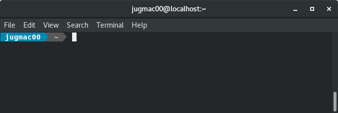
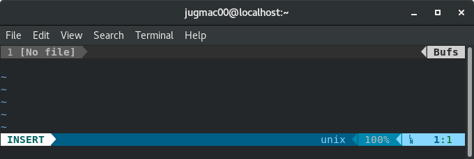

There is something I immediately disliked when using Fedora the first time - the Bash prompt.
For many years I've been using a fixed prompt at work for all my machines, a beauty in green and yellow...
And when I first started Bash after installing Fedora on my home laptop, I encountered this grey monotony...
[jugmac00@localhost ~]$
I did not try to recreate the prompt I have at work, but I wanted to try something new - and oh my zsh, ah, oh my god, zsh did not come to my mind - yuck!
Instead, while googling for resources about Fedora, I stumbled upon Add power to your terminal with powerline published on https://fedoramagazine.org/.
From Powerline's GitHub page:
Powerline is a statusline plugin for vim, and provides statuslines and prompts for several other applications, including zsh, bash, fish, tmux, IPython, Awesome, i3 and Qtile.
The article is written very well, and easy to follow. A few minutes later, installing a few packages here, adding some lines to .bashrc and .vim.rc there, both Bash and Vim looked great!


The wow-effect lasted only a couple of minutes, until I tried to work on a Python project.
When you work on a Python project, it's an hell of an idea to use virtualenv instead of installing dependencies system wide.
From virtualenv's documentation page:
virtualenv is a tool to create isolated Python environments.
So in order to not mess up with Python based Linux applications - such as Powerline - I activated the virtualenv for my project, started Vim... and it made booooom!
Error detected while processing /home/jugmac00/.vimrc:
line 36:
Traceback (most recent call last):
File "<string>", line 1, in <module>
ModuleNotFoundError: No module named 'powerline'
line 37:
Traceback (most recent call last):
File "<string>", line 1, in <module>
NameError: name 'powerline_setup' is not defined
line 38:
Traceback (most recent call last):
File "<string>", line 1, in <module>
NameError: name 'powerline_setup' is not defined
Traceback (most recent call last):
File "<string>", line 4, in <module>
ModuleNotFoundError: No module named 'powerline'
During handling of the above exception, another exception occurred:
Traceback (most recent call last):
File "<string>", line 9, in <module>
ModuleNotFoundError: No module named 'powerline'
An error occurred while importing powerline module.
This could be caused by invalid sys.path setting,
or by an incompatible Python version (powerline requires
Python 2.6, 2.7 or 3.2 and later to work). Please consult
the troubleshooting section in the documentation for
possible solutions.
Unable to import powerline, is it installed?
Press ENTER or type command to continue
As a Python developer I am used to see tracebacks, so I was not scared away immediately, and this traceback was even a very informative one:
ModuleNotFoundError: No module named 'powerline'
In order to verify the missing package, I left Vim and started a Python interpreter and tried to import the Powerline package manually...
jugmac00 ~> python3.6
Python 3.6.5 (default, Mar 29 2018, 18:20:46)
[GCC 8.0.1 20180317 (Red Hat 8.0.1-0.19)] on linux
Type "help", "copyright", "credits" or "license" for more information.
>>> import powerline
>>>
jugmac00 ~> python3.6
Python 3.6.5 (default, Mar 29 2018, 18:20:46)
[GCC 8.0.1 20180317 (Red Hat 8.0.1-0.19)] on linux
Type "help", "copyright", "credits" or "license" for more information.
>>> import powerline
Traceback (most recent call last):
File "<stdin>", line 1, in <module>
ModuleNotFoundError: No module named 'powerline'
>>>
Here we go! Having a look at the longish traceback from above again, I also spotted the exact location of the problem, the import statement in .vimrc.
python3 from powerline.vim import setup as powerline_setup
python3 powerline_setup()
python3 del powerline_setup
There are only two Python 3 interpreters on my system (that I know of)
So obviously, Vim is using my project's environment - instead of the system one!
Two possible solutions came to my mind:
As the few lines of code from above suggest, it seems to be possible to write ordinary Python code within .vimrc.
But where is Powerline's Python package?
Say hello to Python's ability for introspection...
jugmac00 ~> python3
Python 3.6.5 (default, Mar 29 2018, 18:20:46)
[GCC 8.0.1 20180317 (Red Hat 8.0.1-0.19)] on linux
Type "help", "copyright", "credits" or "license" for more information.
>>> import powerline
>>> powerline.__path__
['/usr/lib/python3.6/site-packages/powerline']
So I just had to add the following line to .vimrc:
python3 import sys;sys.path.append("/usr/lib/python3.6/site-packages/")
And here we go, Powerline and Vim, united once again - and this time, even when using an activated virtualenv.
Adding system-wide site-packages could have some unforseen side effects, but at least it only effects Vim, and not my project. And, well... yolo :-)
Googling for the error message did not reveal much more information about this problem. But at least I found a bug report at Powerline's issue tracker - yet without an answer.
Lately, Powerline's development seems to be not that active anyway, and to be honest, I am not sure, whether this is a Powerline or maybe even a Vim bug.